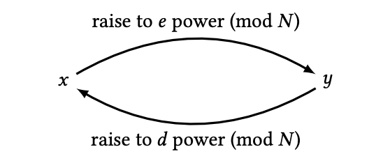

RSA encryption is a little different than previous schemes on this app. Instead of coming up with a key together with the person you'd like to send messages with, RSA uses two keys: a public one, and a private one. One person (the person who wants to receive the message) comes up with both keys, the public one, (N, e), and the private one, (N, d). Then they share the public key with their partner, or with the entire world if they'd like to! Because only they have the private key, they'll be the only person who can decrypt a message sent with the public key.
For the message receiver: generate public and private keys below, then send the public key, (N, e), to your partner. They will encrypt a message number with this public key using the form below, and you can decrypt it with your private key.
For the message sender: your partner should have shared with you a public key, (N, e). Use that to encrypt your message number and you can send that to your partner for them to decrypt.
Note: this is a simplified version of what modern encryption looks like. To limit the computational power used here, only numbers can be encrypted/decrypted on this scheme. Additionally, this scheme isn't secure! To be secure against outside attacks, RSA's must be hashed (meaning that we input your message into a separate, shared, complex function before you encrypt/decrypt it). Because this web app is just for poops and giggles, I didn't use a hash function, so don't send any "dangerous" numbers that you wouldn't want to get out ;)
Note: your key values for d and e were generated randomly. It is possible to pick d and then determine e from that, but because d has very specific requirements with respect to p and q, it makes more sense to choose for the user so that the scheme always works. If you'd like to learn more about how to generate these values for yourself, a good source with a simple explanation of it can be found here.
p =
q =
N =
d =
N =
e =
RSA encryption is different than other schemes in this app because it utilizes a public key, (N, e), and a private key, (N, d). Though only the person who generated the keys knows the private key, the entire world could know the public key and that would be just fine! That's because you can encrypt messages with the public key, but not decrypt them.
RSA encryption relies on something called modular exponentiation, which can be broken down into two parts.
The modular part basically means that you start over once you reach a certain number, which is N in this case. If you remember learning about remainders in division in elementary school, modulus function just utilizes the remainder instead of the usual answer to division. For example, 10 / 3 gives you 3 with a remainder of 1. 10 % 3 (which stands for 10 modulo 3) is 1. Another way of thinking of this is counting in 3's until you get to 10, starting over every time you get to 3. So 10 can be (1, 2, 3), (1, 2, 3), (1, 2, 3), (1). The 'left over' count is 1, since we didn't get all the way to 3 that time.
Exponentiation is something you probably learned about in middle or high school: it's just multiplying something by itself a specific number of times. For example, 23 is just 2 * 2 * 2 - that is, 2 multiplied by itself 3 times.
We can put this together by exponentiating and then finding the 'remainder' in terms of N. For example, if your message number m is 5, and your public key (N, e) is (100, 3), we encrypt that by taking me = 53 = 125, and then operating that modulo N, so me % N = 53 % 100 = 125 % 100 = 25. This is because 125 divided by 100 is 100 with remainder 25. So our encrypted number is now 25.
Decrypting an encrypted message with the private key is a little more complicated to explain, because it deals with something called an inverse. You can think of it like how any number m has a multiplicative inverse in 1/m. That is, m * (1/m) = 1 for all non-zero numbers m. For example, the multiplicative inverse of 2 is 1/2. When working in modulo, certain numbers have an inverse when it comes to exponentation. Because e and d (the exponent components of the public and private keys) are inverses modulo N, (me)d will give you back m.
The reason that RSA is secure (that is, no one will be able to decrypt your message if you don't want them to) is because an inverse is really hard to find if you don't already know it - especially when it comes to the big numbers that modern cryptographic schemes use.
Using the information from the beginner's explanation above, we can start to dig in to why and how RSA really works. We already know that as long as our message number is less than N, we can exponentiate it with a number that has an inverse to encrypt and decrypt it. Well, something we also know is that given a number N = p * q, there are exactly Φ(N) = (p-1)(q-1) numbers that have an inverse modulo Φ(N). So long as the number is less than N and has no common divisors with Φ(N), it will have an inverse and will allow us to find (me)d = m.
Since we have a fool-proof way of finding exponents that have inverses, we can generate them and use them as our public and private keys. We know that someone else won't be able to generate the inverse to our public exponent, e, because only we know p and q, and therefore we're the only ones who know Φ(N). Since RSA uses really big numbers for N, p, and q, it would take an insane amount of time to go through all the possible values that the private exponent, d, could be, and our message is safe.
If we let m = x and me = y, here's a good diagram from chapter 13 of Mike Rosulek's The Joy of Cryptography showing exactly how RSA works.
